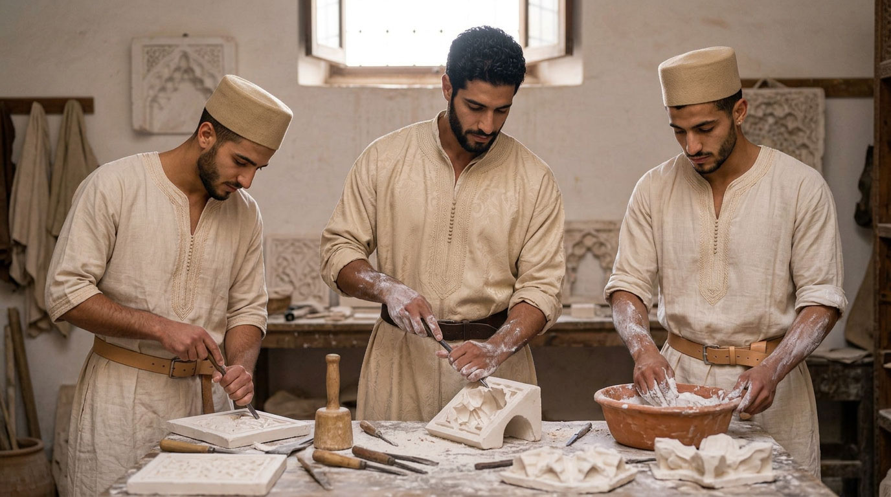
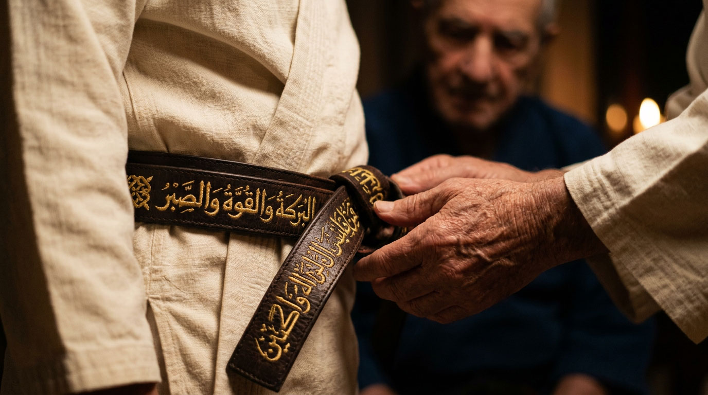
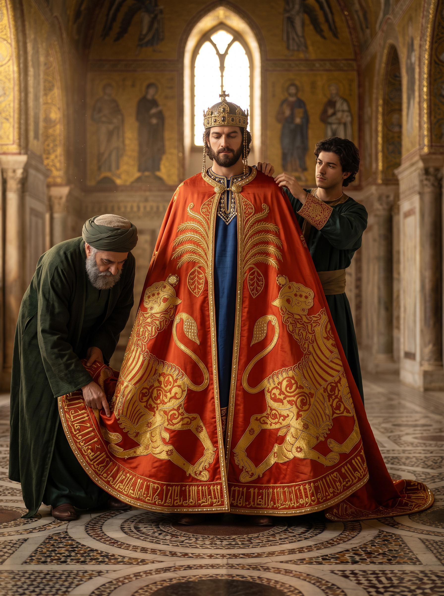
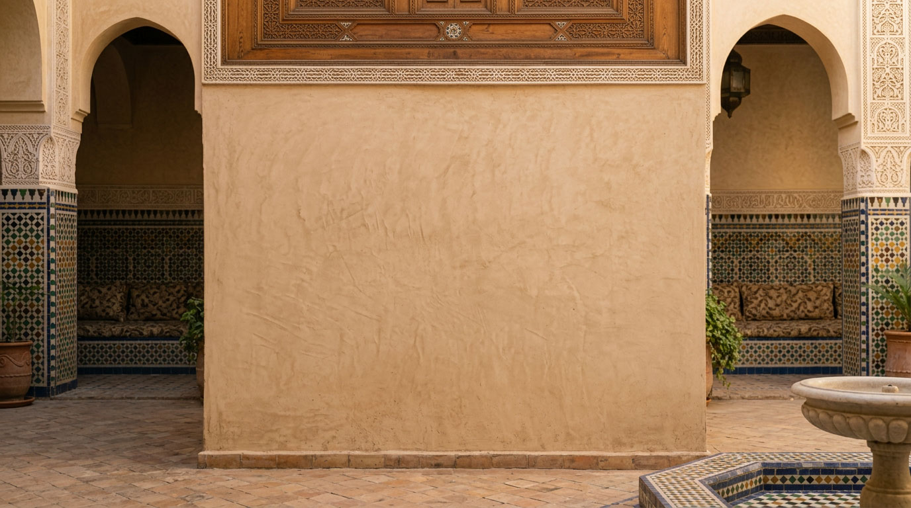

أثر
Al-Athar
An imprint carved to last.

THE RULE
Written before the house
No one will leave Dar al-Hiraf without having left, in its walls, a work of his own hand.
Not an object to carry away: a zellīj panel in a corridor, a door, a basin, a plaster ceiling, an iron grille, an inscription above a threshold. Something that stays, and cannot be taken back.
This is not a ceremony added to the training. It is the training brought to its end. A companion is not the man who knows how to make something: he is the man whose work has been received by his master, and then set in place in the house.
The rule is written now, before there is a house, because the house will be made this way.

THE WORK OF RECEPTION
What is received, and what is not
The work is chosen with the master, within the craft learned, and to the measure of what the man can truly do — not of what he would like to display. It must be useful to the house and destined for a precise place: a wall, a threshold, a courtyard, a workshop.
It is then judged. The master may refuse it: then one begins again, and one may not finish. It is this possible refusal that gives the reception its weight; a trial one is certain to pass is not a trial.
Fixed
The work is built into the building. It is not sold, not moved, not returned.
Useful
It serves a purpose: it is walked on, leaned against, drawn from, looked at every day.
Received
It exists as a work only when the master accepts it and the community sees it set in place.
The logic is an old one: that of the masterpiece in the craft brotherhoods, and that of the ijāza in the Islamic tradition of learning, where one is authorised to transmit not because one has learned, but because a master attests that one has learned from him.
إِنَّ اللهَ يُحِبُّ إِذَا عَمِلَ أَحَدُكُمْ عَمَلًا أَنْ يُتْقِنَهُ
"God loves that, when one of you does a work, he does it with excellence."
This is the ḥadīth embroidered in gold thread, in Andalusian Kufic, on the fourth-grade belt — the Ḥizām al-Itqān, the master's belt. The rule governing the work of reception and the sign worn at the waist say the same thing: Al-Kiswa →
Reported by Abū Yaʿlā and al-Ṭabarānī; held sound (ṣaḥīḥ) by al-Albānī in al-Silsila al-Ṣaḥīḥa, on the strength of corroborating witnesses. It is not found in the two Ṣaḥīḥ collections of Bukhārī and Muslim.
THE FIRST ONES
The first work will be the house itself
The Riad does not exist yet. Those who come first will therefore not set a piece into a finished building: they will raise the building.
The plasterwork, the floors, the joinery, the ironwork, the doors and the water of the house will be their apprentice labour before they are their masterpiece. The restoration is not a worksite preceding the training: it is its first year.
This is also what sets the project apart from an ordinary restoration. A site entrusted to a contractor produces a building; a site entrusted to apprentices under the hand of masters produces a building and men.
How the house is raised →AS-SIJILL
The register
To every work set in place corresponds a written line: what was made, by which hand, under which master, in which year. The register stays in the house. It is not published, and no resident's name appears on this site.
After twenty years the building and the register say the same thing in two ways: a chain of men, and what they left behind. A man returning at forty can show his son the door he carved at twenty-two.

THE FORM OF THE ENTRY
مِمَّا عُمِلَ بِدَارِ الحِرَفِ بِرِيَاضِ الأُنْسِ
Among the things made in the house of Al-Uns — filled with patience and constancy, uprightness and valour, generosity and kindness, silence and perseverance — : the work, of the craft of the craft, by the hand of the name, under the guidance of maalem the name, set in the place, received in the year the year of the Hijra.
The formula follows the inscribed bands of the royal ṭirāz, the silk workshops where the place and the year of making were embroidered along the very hem of the cloth. The mantle of Roger II, woven in Palermo in 528 of the Hijra (1133–1134), opens in the same way: “Among the things made in the royal khizāna, filled with fortune and honour, glory and perfection…” — then comes the long rhymed chain of qualities, and last the city and the date. There the object carries its own memory, as here the work carries its own.
ONE CLEAR LIMIT
What does not leave the house
The workshops also produce for the outside: objects, cloth, essences, commissioned work. That production is necessary — it keeps the house alive and tests the craft against the demands of a real client.
The work of reception never enters that circuit. It has no price because it can have no buyer. It is the one thing the Riad makes and cannot part with.
Crafts of the Riad →THE DEBT
No one leaves quits
He who has received a craft owes one. At the end of the residency, a man undertakes to teach in his turn what he has learned — to at least one other, in the years that follow, wherever he goes.
That undertaking is entered in the register alongside the work, and the register also records the day it is discharged. Dar al-Hiraf does not produce graduates: it produces debtors of a chain.
This is the most concrete meaning of futuwwa: what has been received freely is never one's own alone.
Futuwwa →TODAY
The waiting wall
In the house to come, one wall will be left bare and declared as such: reserved for the first work received. It will not be painted, nor decorated, nor filled in the meantime.
It is a small thing, and it is the essential one: the house will begin with an emptiness that already has a recipient.

مكان محفوظ
Reserved
This place awaits the work of the first companion received at Dar al-Hiraf.
A note on the word
Athar (أثر) is an attested Arabic word: the trace, the vestige, what remains after a passage — and, in religious vocabulary, a report transmitted from one generation to the next. Both senses are deliberately kept here. Its use as the name of a house rule belongs to this project and refers to no historical institution of that name.